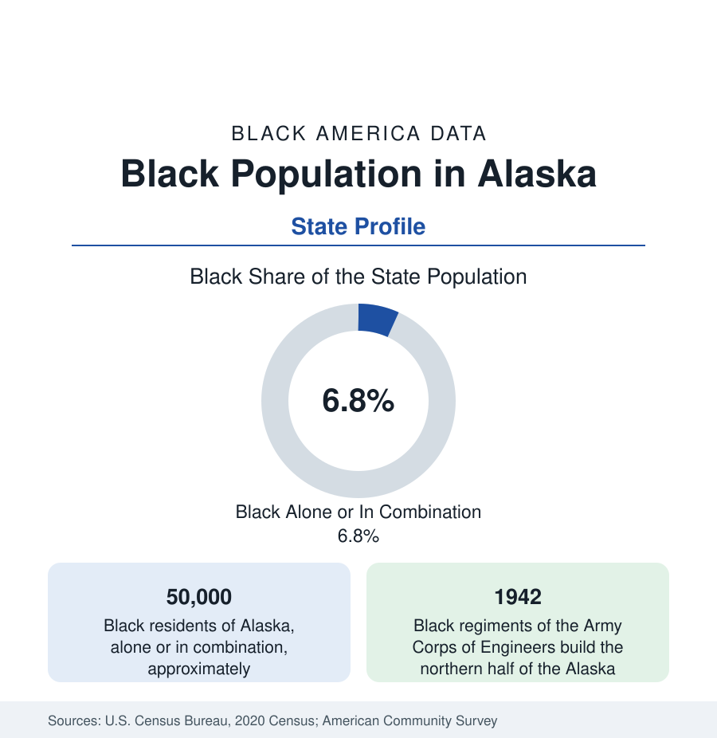

Black Census
Black Population in Alaska: The Highway the Black Regiments Built
About 50,000 Black Alaska residents — one in fifteen — from the Black engineers who built the Alaska Highway to America's most diverse neighborhood. The census profile.

Alaska holds about 50,000 Black residents — Black alone or in combination — roughly one in fifteen of its people, with Black alone at about 24,000, or 3.3 percent. The share surprises readers who picture the Last Frontier's demographics from its rural Native and white majorities; in fact Alaska's Black population, built by the military and anchored in Anchorage and Fairbanks, gives the state one of the more diverse urban profiles in the West — including, by the census's own diversity index, the single most diverse neighborhood in the United States.
The Highway Builders
Black Alaska's founding labor is carved into the state's geography. When the Army built the Alaska Highway in 1942 — 1,500 miles of road through the Yukon and British Columbia in eight months — roughly a third of the soldiers who built it were Black, serving in segregated engineer regiments (the 93rd, 95th, and 97th Engineers and their sister units) assigned disproportionately to the northern, coldest, least-supplied sections. The Black regiments' performance under those conditions became a documented episode in the integration argument that followed the war; the highway itself remains the state's lifeline road, and the regiments' memorials stand along it. Earlier layers exist — Black whalers and stewards in the nineteenth-century ports, Black prospectors in the gold rushes (a handful of documented figures in the Nome and Fairbanks camps), cooks and soldiers at the early posts — but the highway is the mass event from which the modern population descends.
Anchorage and Mountain View
Anchorage holds roughly three-fifths of Black Alaska — in the range of 28,000 to 30,000 people in combination counts — across a city whose east side holds the famous distinction: Mountain View, the neighborhood east of downtown, has been measured in successive census analyses as the most diverse census tract cluster in the United States, with its Black, Native, Pacific Islander, Latino, Asian, and white populations in near-even mixture. The city's Black community centers in Mountain View, Fairview, and the Muldoon corridor, employed by Joint Base Elmendorf–Richardson, the hospitals and the university, the port and airport logistics economy, and state government. Fairbanks, the interior city, holds the second community — roughly 5,000 in combination counts, at shares approaching a tenth of the city — on Fort Wainwright and Eielson Air Force Base, the interior's military economy. Juneau and the panhandle towns, Kodiak, and the Kenai record small communities; the rural bush, predominantly Alaska Native, records Black shares near zero outside the hub towns' service populations.
Composition: Military Churn, Rooted Layer
The composition follows the Pacific pattern of Hawaii's file: a large military share with high turnover (Alaska's Black population moves in and out on orders, and the census's mobility data show it), over a rooted civilian layer — the highway generation's descendants, the pipeline-era arrivals of the 1970s (the trans-Alaska pipeline's construction drew Black workers in the boom and some stayed), the fishing and maritime workforce, and a growing African immigrant community in Anchorage. The multiracial share is high, as in Hawaii: Black-Native and Black-white combination counts are substantial in the urban data, and the 'in combination' convention is again the honest headline.
Indicators and Change
The indicators carry the federal-economy cushion of the other garrison states: employment and incomes anchored to military and public scales, education through the University of Alaska system, housing costs in Anchorage's severe market borne partly through service allowances. The estimates show the Black population stable to slowly growing with force levels, its rooted share rising slowly as each military generation leaves a retiree layer behind. Alaska Native corporations and the state's distinctive economic institutions touch the Black population mainly as employers; the two communities' data otherwise run on separate tracks in the state's tables, meeting in the mixed neighborhoods of the east side.
Reading the Alaska Numbers
Alaska's profile rewards the combination count and the history together: 50,000 people, the highway their predecessors built as the state's foundation document, and a neighborhood in Anchorage that the census calls America's most diverse. The Last Frontier's Black population is small, federal, and woven into the state's defining infrastructure from the first mile of its first road.
More in Black Census
The Black Population of the United States: Size, Definitions, and Distribution
The Black population of the United States totals 52.8 million — 15.4 percent of the nation. How the Census Bureau defines and counts the population, and where it lives.
Black Median Household Income in the United States
Black median household income stands at $56,490 in the Census Bureau's annual income report — how the figure is measured, how it compares, and what drives it.
The Black Poverty Rate: Levels, Children, and the Long Trend
The official Black poverty rate is 17.1 percent — against 11.1 percent nationally and 7.7 percent for non-Hispanic White Americans. How poverty is measured and what the data show.
Source: U.S. Census Bureau, 2020 Census; American Community Survey; Population Estimates Program.